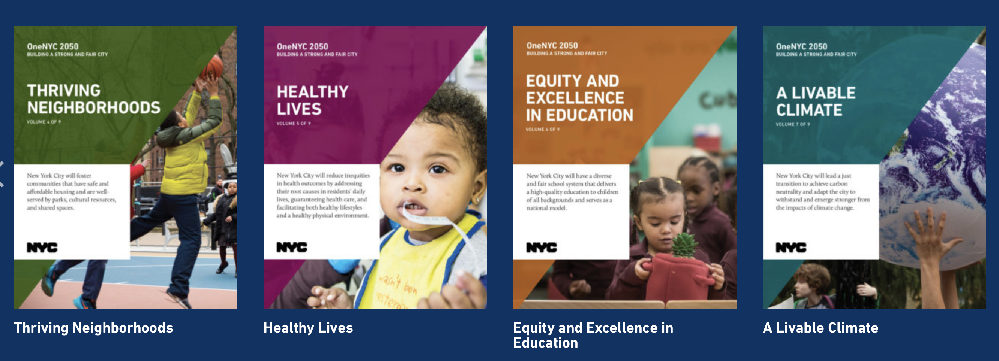
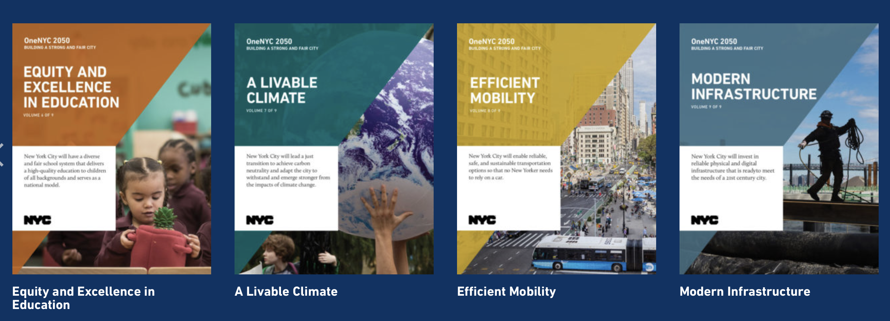

P0licy
4.1 Summary


New York City’s 2050 plan is a comprehensive plan that outlines the city’s goals for sustainability and resiliency. The plan includes measures to address a range of challenges, including climate change, economic growth, and social equity. Some of the key takeaways from the plan that can be helpful for urban planning are:
Long-term planning is necessary for addressing complex challenges. New York City’s 2050 plan is designed to address the challenges of the future, including climate change and population growth. This shows that long-term planning is necessary for addressing complex challenges that require significant resources and coordination.
Sustainability and resiliency must be integrated into all aspects of urban planning. New York City’s 2050 plan integrates sustainability and resiliency into all aspects of urban planning, including land use, transportation, and building design. This shows that sustainability and resiliency must be integrated into all aspects of urban planning in order to create a truly sustainable and resilient city.
Community engagement is crucial for successful urban planning. New York City’s 2050 plan includes extensive community engagement to ensure that the plan reflects the needs and priorities of the city’s residents. This shows that community engagement is crucial for successful urban planning that is responsive to the needs of the community.
Collaboration and coordination across multiple sectors and levels of government are necessary for successful urban planning. New York City’s 2050 plan involves collaboration and coordination across multiple sectors and levels of government, including city agencies, private sector partners, and community organizations. This shows that collaboration and coordination are necessary for successful urban planning that involves a wide range of stakeholders and resources.
The New York City 2050 plan provides a useful roadmap for urban planning that is focused on sustainability and resiliency, and that involves community engagement, collaboration, and long-term planning. These principles can be applied to urban planning in other cities to create more sustainable and resilient communities.
4.2 Application
There are various urban disasters that affect cities around the world. Some of these disasters include:
Urban pollution Pollution in cities is caused by the release of harmful chemicals into the air, water, and soil. This can result in health problems for people living in the city. To reduce pollution, cities have implemented policies such as:
Promoting the use of public transportation, bicycles, and walking
Regulating the emissions from factories and vehicles
Encouraging the use of renewable energy sources
Implementing waste management systems to reduce landfill waste
Urban heat island effect The urban heat island effect occurs when cities are significantly warmer than their surrounding rural areas due to the heat trapped by buildings, roads, and other urban infrastructure. To mitigate this effect, cities have implemented policies such as:
Increasing green spaces such as parks, gardens, and urban forests
Promoting the use of cool roofs and green roofs
Encouraging the use of natural ventilation in buildings
Planting trees to shade sidewalks and streets
Urban floods Urban floods occur when there is heavy rainfall and the city’s drainage system is unable to handle the water flow. This can cause damage to buildings and infrastructure, and pose a threat to public health. To mitigate urban floods, cities have implemented policies such as:
Implementing flood prevention measures such as stormwater detention ponds, permeable pavements, and green roofs
Promoting the use of rain gardens and bioswales to absorb water
Developing early warning systems for floods
Implementing flood insurance programs
Urban traffic congestion Urban traffic congestion occurs when there is too much traffic on the roads, leading to slow-moving traffic, increased fuel consumption, and air pollution. To mitigate urban traffic congestion, cities have implemented policies such as:
Promoting the use of public transportation, bicycles, and walking
Encouraging carpooling and the use of ride-sharing services
Implementing road pricing policies to discourage car use during peak hours
Developing intelligent transportation systems to optimize traffic flow
Urban crime Urban crime is a major issue in many cities around the world. To mitigate urban crime, cities have implemented policies such as:
Increasing police presence and surveillance
Developing community policing programs
Implementing crime prevention through environmental design (CPTED) principles to make neighborhoods safer
Providing education and job training opportunities to reduce poverty and improve social equity
In conclusion, cities face various disasters that require different policy solutions. Through the implementation of appropriate policies, cities can effectively mitigate these disasters and create more livable environments for their residents.
4.3 Reflection
Studying these urban policies has given me a number of conclusions and reflections:
Global problems require global cooperation to solve them. Many urban policies address global issues, such as climate change and environmental pollution. These problems cannot be solved by individual cities alone and require global cooperation and coordination.
Policy implementation requires political support and public participation. Many urban policies require political support and public participation to be implemented. Governments and political leaders need to play an important role in solving urban problems, and the public needs to be actively involved in supporting and promoting policy implementation.
Long-term planning and sustainability are key to solving urban problems. Many urban policies emphasise long-term planning and sustainability. The future of cities needs to consider long-term sustainability rather than short-term solutions. Policymakers need to consider changes in the coming decades and develop policies that will solve urban problems in the long term.
Some policies may lead to undesirable consequences. Urban policies need to be considered holistically to ensure that they do not lead to undesirable consequences. For example, some policies may lead to higher house prices or the exclusion of poor people from urban development. Policymakers need to weigh up different interests to ensure that policies are viable and effective.
Policies need to be adapted to local contexts and cultures. Different cities have different environmental and cultural contexts, and policy makers need to adapt to local contexts and cultures to ensure that policies are accepted and implemented by local communities.